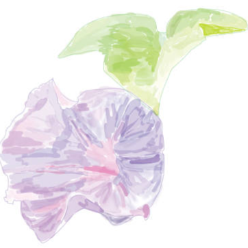
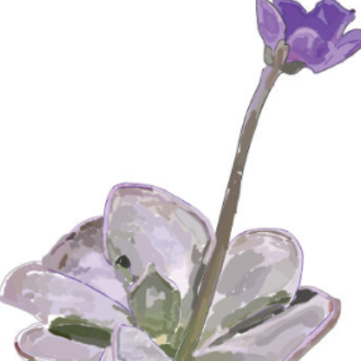

Gallery




Morning glory plant
The morning glory plant is a fast growing plant known for their trumpet-shaped flowers that open and blossom in the morning and close by the afternoon. They need 6 to 8 hours of sunlight to bloom well. The morning glory symbolizes love, affection, resilience, and new beginnings.
Iris plant
The iris plant blooms in full sun, and therefore needs at least 6 to 8 hours of sunlight every day. Irises are perennial plants that return to bloom year after year. Most irises come from rhizomes or bulbs, and are a reliable, hardy garden plant that can last many years given the proper care. The iris is a bearer of messages and a symbol of deep sentiments.
Hibiscus plant
The hibiscus plant is a perennial plant that comes back every year. It belongs to the mallow family and the genus consists of several hundred species that are native to warm temperate, subtropical, and tropical regions in the world. Their flowers are large and have five or more petals, with colors ranging from white to pink, red, blue, orange, peach, yellow, or purple.
Butterwort plant
The carnivorous butterwort plant needs a lot of UV rays. Butterworts are a genus of carnivorous plants known as Pinguicula that use their sticky, glandular leaves to trap and digest insects. Found across the Northern Hemisphere and Central and South America, they have beautiful and long-lasting flowers.